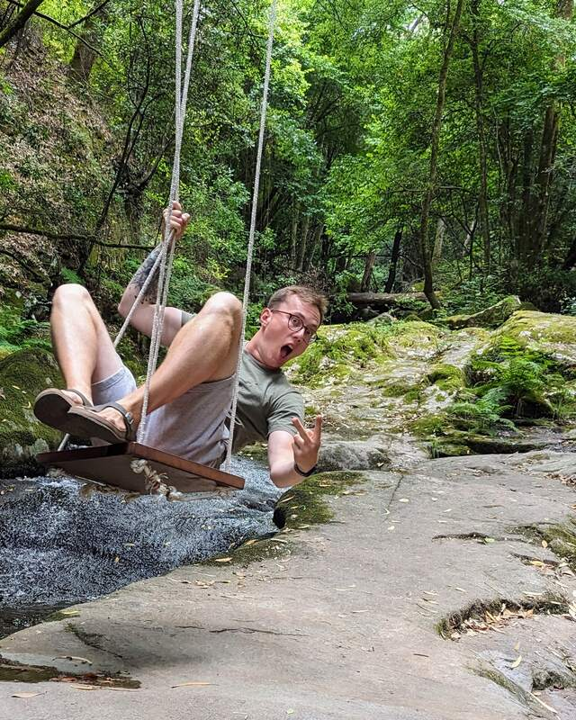

Hi, I’m Felix.
I studied media informatics and then computer science at HTWK Leipzig. Alongside my studies I started working as a student developer, and I’ve been doing it ever since. I spent five years at ccc software, where I wrote code but also planned projects and presented our software to customers. Since 2024 I’ve been at Allegro Packets.
Frontend is the part I enjoy most. I’m interested in how something looks, but just as much in how it’s put together: which components it needs, how they fit, and how to keep it all manageable as an application grows.
I’m not sure I’ll only be writing code for the rest of my career. I find myself drawn to the point where engineering, design and deciding what to build actually meet.

Where I’ve been
What I work with
TypeScript and Angular, pretty much every day since 2019. I’m comfortable with React too, and on the backend I know my way around C# and .NET. Python, C++, Java and SQL I used a lot at university and in my student jobs.
Beyond that, I’m interested in UX and UI. I’d rather think twice about how something will be used before I start building it.
It plays. Click the keys or use your keyboard.It plays. Give it a tap.
When I’m not working
Karate
I’ve been training for over 20 years, and played table tennis for a while as well. Once I’m into something, I usually stick with it.
Music
I play the piano and listen to a bit of everything, from metalcore to EDM. Ideally on vinyl.
Out and about
Most of my free time I spend outdoors, travelling, or with friends.
At home
A lot of plants that I like looking after, and furniture that’s mostly mid-century with a bit of boho. There’s a small server in a corner, too.
Other than that, I go running, cook a lot, read fantasy and watch films.